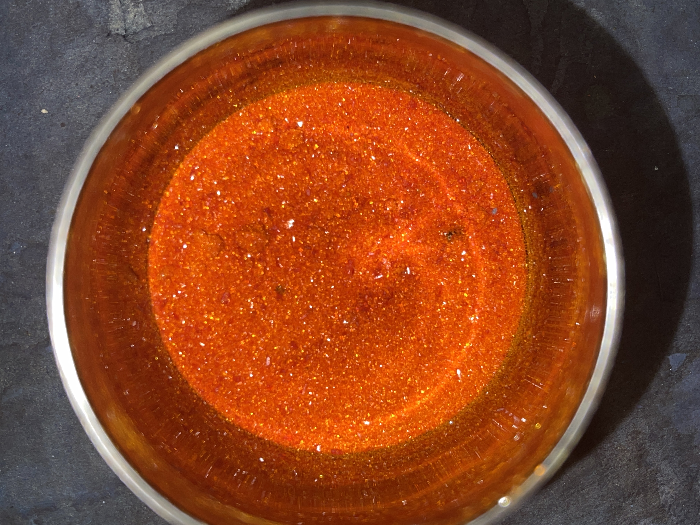
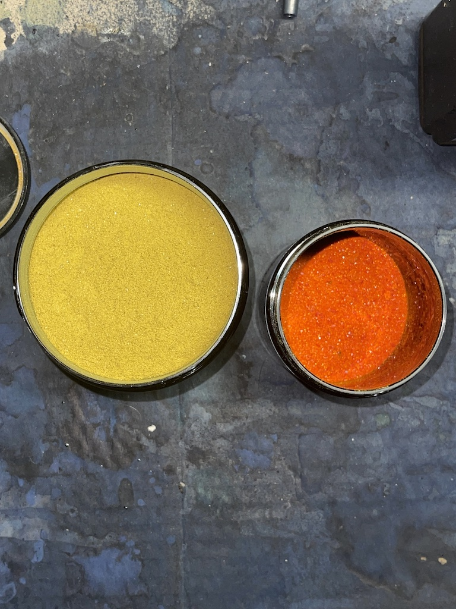
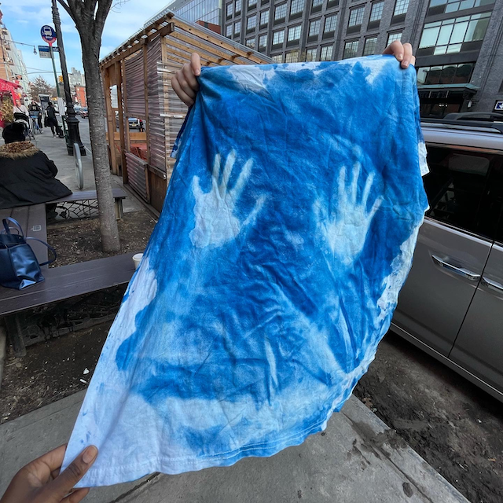

Cyanotype printmaking is a monochromatic printmaking method that utilizes the chemicals ferric ammonium citrate and potassium ferricyanide.
Potassium ferricyanide has a bright red coloration.

The granules have a magical shimmering quality. Ferric ammonium citrate contrasts greatly it is a powdery chartreuse.

The chemical mixture creates a light-sensitive surface and when exposed to the sun with an object or photographic negative it creates a photogram. Here is a cyanotype print of my hands.  Return